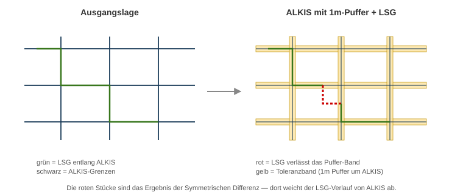

Praxis: LSG-Grenze gegen ALKIS prüfen
Der reale Anlass
Ein Landschaftsschutzgebiet (LSG) im Landkreis Kusel wurde durch eine Änderungsverordnung neu festgesetzt. Die geänderten Grenzen wurden von einem externen Planungsbüro als Shape-Datei geliefert und sollten in das landesweite Schutzgebietssystem LANIS beim Landesamt für Umwelt Rheinland-Pfalz eingepflegt werden.
Rückmeldung des LfU sinngemäß:
Auszug aus dem fachlichen Schriftverkehr
„Die Daten der anderen LSGs Ihres Landkreises sind nicht wirklich brauchbar digitalisiert. Bitte verwenden Sie zukünftig ALK-konforme Geometrien – die LSG-Grenze muss exakt auf den Flurstücksgrenzen aufsetzen."
Unsere Aufgabe: Prüfen, wo die gelieferte Geometrie von ALKIS abweicht – damit diese Stellen gezielt korrigiert werden können.
Die Idee in einem Bild

Wir legen ein schmales Toleranzband (1 m) um die ALKIS-Flurstücksgrenzen. Solange die LSG-Linie innerhalb dieses Bandes verläuft, ist sie „nah genug an ALKIS". Verlässt sie das Band, haben wir eine Abweichung – und genau die suchen wir.
Die Analyse-Kette im Überblick
flowchart TB
subgraph IN[Eingangsdaten]
L0[LSG-Polygon vom Planungsbüro]
A0[ALKIS-Flurstücke per WFS]
end
A0 --> A1[1. Clip auf LSG-Umkreis<br/>weniger Daten = weniger Rechenzeit]
A1 --> A2[2. Polygone → Linien<br/>nur die Grenzen]
A2 --> A3[3. Puffer 1 m<br/>Toleranzband]
L0 --> L1[4. Polygone → Linien<br/>LSG-Grenzlinie]
A3 --> S[5. Symmetrische Differenz<br/>Input: LSG-Linien<br/>Overlay: ALKIS-Puffer]
L1 --> S
S --> R[Ergebnis: Abweichungen]
style R fill:#fce4d6,stroke:#cc0000
style IN fill:#f3f3f3,stroke:#888Schritt-für-Schritt
0. Projekt vorbereiten
- Neues QGIS-Projekt
- CRS auf EPSG:25832 (ETRS89 / UTM Zone 32N) einstellen – für Rheinland-Pfalz Standard
- OpenStreetMap als Hintergrund hinzufügen (XYZ-Tile)
1. LSG-Polygon laden
Die vom Planungsbüro gelieferte Datei (.geojson, .shp oder .gpkg) per Drag & Drop in QGIS ziehen oder über Layer → Layer hinzufügen → Vektor-Layer.
Symbolisierung:
- Füllung: transparent / hellgrün
- Rand: kräftig grün, 0.6 mm
So sehen Sie sofort, wo das Gebiet überhaupt liegt.
2. ALKIS per WFS laden (Geobasis Loader)
- Plugin Geobasis Loader RLP installieren (Erweiterungen → Verwalten und installieren)
- In der Plugin-Leiste auf das Symbol klicken
- Auswahl: ALKIS → Flurstücke
- Zur LSG-Fläche zoomen, dann In aktuellen Kartenausschnitt laden
ALKIS ist groß
Wenn Sie versehentlich für den ganzen Landkreis laden, wartet QGIS minutenlang. Immer vorher auf den Bereich des LSG zoomen.
3. ALKIS auf den Untersuchungsbereich zuschneiden (Clip)
Vektor → Geoverarbeitungswerkzeuge → Zuschneiden
| Feld | Wert |
|---|---|
| Eingabelayer | alkis_flurstuecke |
| Überlagerungslayer | lsg_polygon |
| Geclippt | alkis_clip (neue Datei) |
Ergebnis: Nur die ALKIS-Flurstücke, die das LSG schneiden, bleiben übrig – meist sind das nur einige hundert statt zehntausende.
4. ALKIS-Polygone zu Linien umwandeln
Vektor → Geometrie-Werkzeuge → Polygone zu Linien
| Feld | Wert |
|---|---|
| Eingabelayer | alkis_clip |
| Linien | alkis_lines |
Jetzt haben wir die Flurstücksgrenzen als Linien-Layer.
5. Puffer um die ALKIS-Linien legen (1 m)
Vektor → Geoverarbeitungswerkzeuge → Puffer
| Feld | Wert |
|---|---|
| Eingabelayer | alkis_lines |
| Abstand | 1 (Einheit Meter – wegen EPSG:25832) |
| Segmente | 5 |
| Endkappenstil | Rund |
| Verbindungsstil | Rund |
| Ergebnis auflösen | ja |
| Gepuffert | alkis_buffer |
Visuell: Sie sehen jetzt ein "Skelett" – ein 2 m breites Band entlang jeder Flurstücksgrenze.
Warum 1 m und nicht 0?
Beim Übertragen historischer Karten, Vermessungen oder Plänen entstehen immer kleine Ungenauigkeiten. 1 m ist die Toleranz, die das LfU in der Praxis akzeptiert. Würden Sie 0 m wählen, würde jede Mini-Abweichung als Fehler markiert – inklusive irrelevanter Rundungsfehler.
6. LSG-Polygon zu Linien umwandeln
Gleiches Werkzeug wie Schritt 4, aber für den LSG-Layer:
| Feld | Wert |
|---|---|
| Eingabelayer | lsg_polygon |
| Linien | lsg_lines |
7. Symmetrische Differenz – das Herzstück
Vektor → Geoverarbeitungswerkzeuge → Symmetrische Differenz
| Feld | Wert |
|---|---|
| Eingabelayer | lsg_lines |
| Überlagerungslayer | alkis_buffer |
| Symm. Differenz | lsg_abweichungen |
Was passiert dabei?
- Alle LSG-Linienstücke, die innerhalb des Puffer-Bandes liegen, gelten als "auf ALKIS aufgesetzt" → fallen weg
- Alle LSG-Linienstücke, die außerhalb des Bandes liegen, bleiben übrig → das sind die Abweichungen
8. Ergebnis interpretieren
- Den Layer
lsg_abweichungenrot und kräftig (1.0 mm) symbolisieren - Hineinzoomen und prüfen
- Mit dem Kartenfenster OpenStreetMap-Hintergrund sichtbar lassen
Was Sie sehen werden:
- Lange rote Linien → Die LSG-Grenze verläuft über mehrere Flurstücke hinweg falsch (echter Fehler, muss korrigiert werden)
- Kurze rote Stücke an Ecken → meistens Digitalisier-Artefakte (zu großzügiger Puffer macht das robuster)
- Keine roten Linien → die LSG-Grenze ist ALK-konform
Zusammenfassende Bewertung der Methode
| Stärke | Grenze |
|---|---|
| Funktioniert für jedes Schutzgebiet, ohne den Datensatz öffnen zu müssen | Findet keine fehlenden Flurstücke – nur falsch verlaufende Grenzen |
| Reproduzierbar als Modell im Modellbauer speichern | Bei sehr alten Karten kann 1 m Puffer zu eng sein |
| Liefert exakte Geometrie der Fehlstellen | Sym. Differenz auf gemischten Geometrietypen – immer das Ergebnis prüfen |
Bereit für die selbstständige Anwendung? → Übung: LSG Holzbachtal